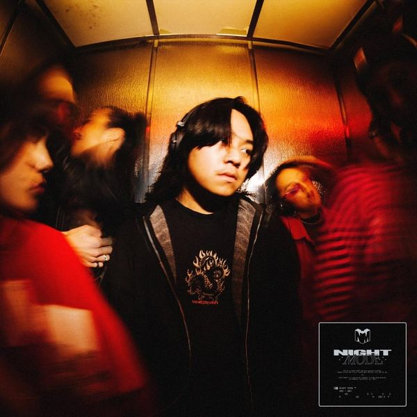
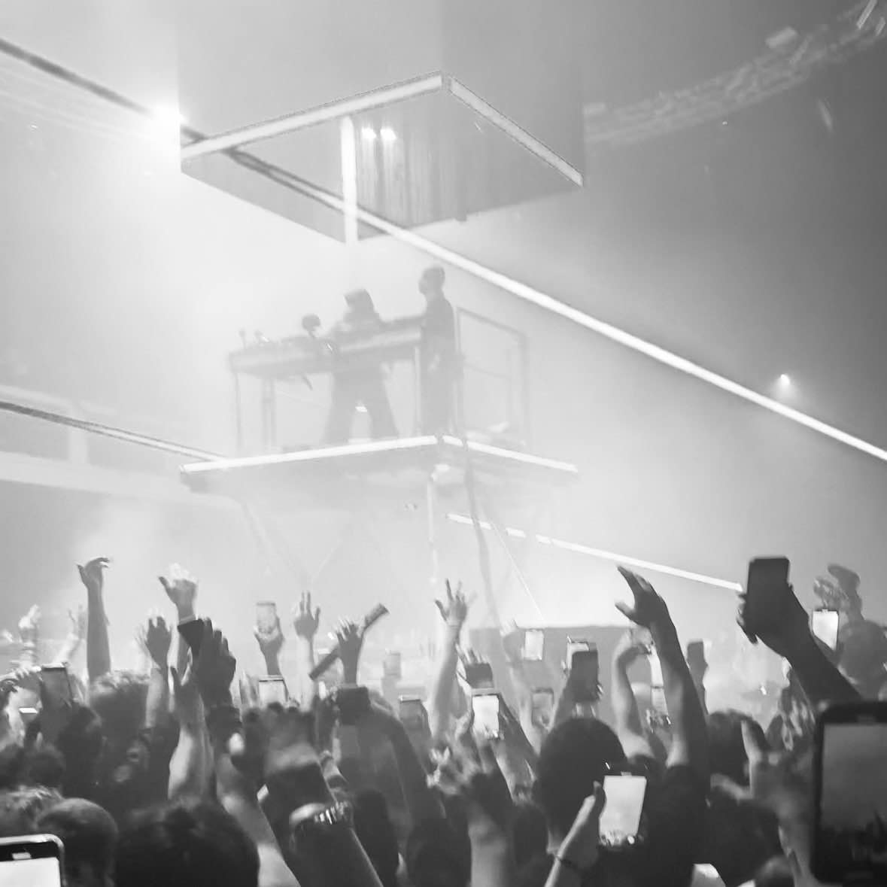

KNOCK2 PRESENTS: ROOM202
THE CATWALK CLUB
The first show, located
- MAKE U SWEAT
- REWiND
- gettin' hot
- Are U Feelin Me (feat. DEV)
- JUMP in
- Rock Ur World (feat. fussy)
HARD SUMMER
My first festival, Hard Summer. Knock2 was to perform at stage and I knew I had to get there early. It wasn't as intimate as his standalone sets where, but it was a great time. I was with friends who were curious about Knock2, because I couldn't stop talking about him LOL. Friends and I had a blast, but again, not as great as his standalone sets.
THE SHRINE
The ROOM202 finale. It was my birthday, just turned 23. I actually met up with a dude who shared the same birthday! This was the last ROOM202 show of Knock2's tour. He sold out FOUR NIGHTS. I went to the third and he ended up recording that third day set. After he finished his set, he annouced his debut long play, nolimit.
